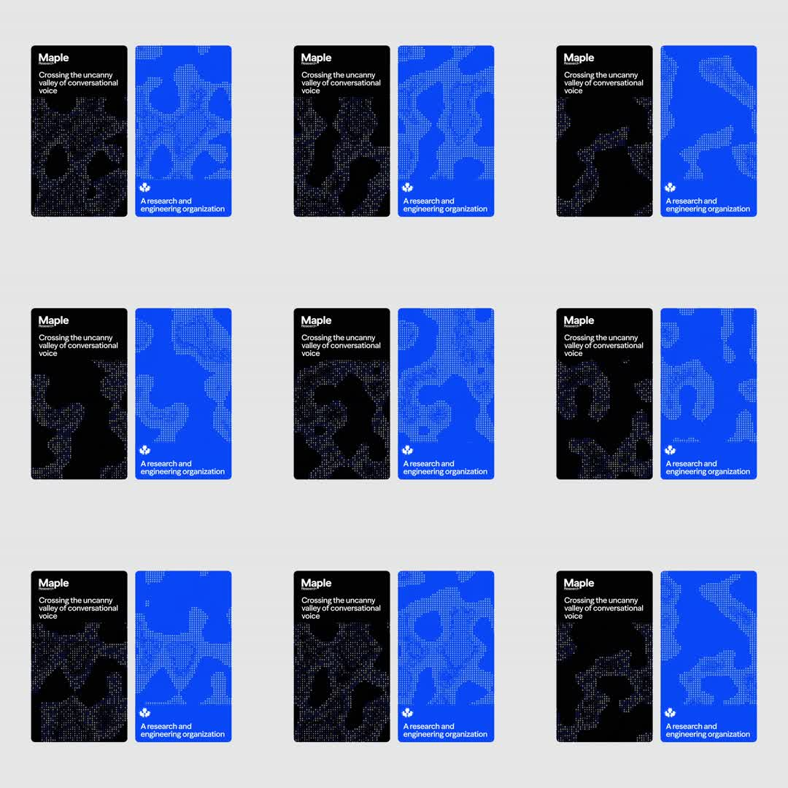

Pair of brand cards (black 'Maple Research' card, blue org card) whose faces carry a live halftone dot-field: grids of dots whose sizes swell/shrink to render slowly morphing organic blobs, like a fluid seen through a dot screen.
Media
Frame-by-frame

0-20%
Two vertical cards; black card shows white dotted blob shapes mid-morph; blue card shows the same field in darker blue dots; text locked up top-left and bottom-left.
20-50%
The dotted blobs drift and merge - metaball-like unions and separations; dot radius encodes the field value (bigger dot = inside the shape).
50-80%
Blobs keep morphing with smooth noise-driven motion; no hard edges anywhere - everything resolves through dot size.
80-100%
Field continues cycling; text and card chrome never move; infinite ambient loop.
Build prompt
Rebuild this interaction 1:1: a pair of brand cards (one black "Maple Research" card, one blue org card) whose faces carry a live halftone dot-field - grids of dots whose radii swell and shrink to render slowly morphing organic blobs, like fluid seen through a dot screen.
## Integration
Integration: stack-agnostic spec - springs given as stiffness/damping, timed motions as duration + curve, canvas/shader notes are perf guidance only; map every value to your framework and animation library of choice.
## Scene
Two vertical cards side by side. Black card: white dots. Blue card: darker blue dots. Text locked top-left and bottom-left on each (wordmark / tagline) - the chrome never moves. Dots are small (2-6px radius range) on a regular grid with generous spacing.
## Motion spec
Pattern: ambient generative loop.
- Field morph cycle ~8-12s, continuous: metaball centers drift on smooth noise paths; blobs merge and separate (metaball union), never hard-edged - everything resolves through dot size.
- Per-dot: radius = base + field value * max; dots below threshold shrink to near-invisible rather than popping out.
- No camera motion, no card motion, no text motion.
## Calibration
- Morph ~8-12s per cycle: slow enough that you notice the shape changed, not that it is changing.
- Simplex-driven drift, not random wander - the blobs should feel like one continuous fluid body.
- Dot radius mapping is the entire render: no fills, no strokes, no blur.
## Reduced motion
Render one representative field frame statically per card.
## Don't miss
- The two cards run the same field logic in different colorways - they are a pair, not two demos.
- Blobs merge and separate smoothly; threshold-crossing dots must grow/shrink, never blink.
- Text stays perfectly still over the living field - that tension is the design.
Mechanics
trigger
autoplay ambient
elements
2 cards, dot-grid canvas per card
properties
per-dot radius (field value), field = sum of 2-3 moving radial metaballs + noise